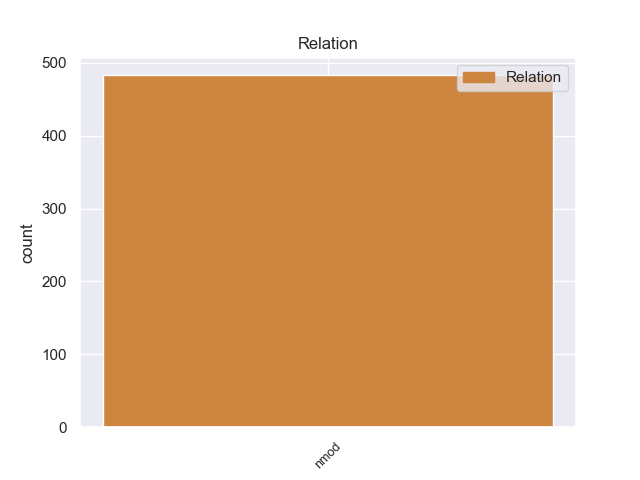
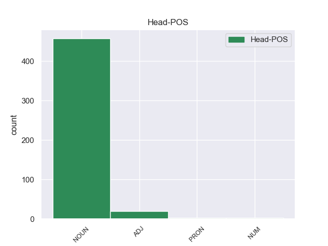
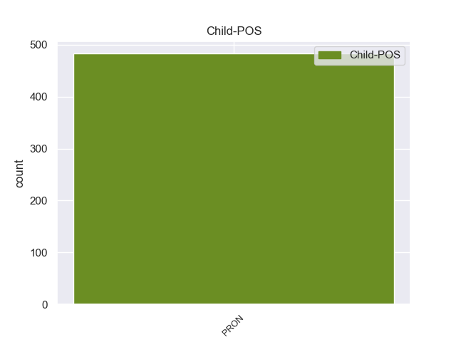

Distribution of features within this leaf



Morphosyntax Rules sorted by frequency.
- When the dependent token is the nominal modifier(nmod) of the head token, and the dependent token is PRON, the Case needs to be Gen.
1 Υπ' _ _ _ _ 0 _ _ _
2 αυτές _ _ _ _ 0 _ _ _
3 τις _ _ _ _ 0 _ _ _
4 συνθήκες _ _ _ _ 0 _ _ _
5 , _ _ _ _ 0 _ _ _
6 η _ _ _ _ 0 _ _ _
7 Επιτροπή _ _ _ _ 0 _ _ _
8 Νομικών _ _ _ _ 0 _ _ _
9 Θεμάτων _ _ _ _ 0 _ _ _
10 , _ _ _ _ 0 _ _ _
11 της _ _ _ _ 0 _ _ _
12 οποίας οποίος PRON PRON Case=Gen|Gender=Fem|Number=Sing|Person=3|PronType=Rel 14 nmod _ _
13 τη _ _ _ _ 0 _ _ _
14 θέση θέση NOUN NOUN Case=Acc|Gender=Fem|Number=Sing 0 _ _ _
15 αποδέχομαι _ _ _ _ 0 _ _ _
16 πλήρως _ _ _ _ 0 _ _ _
17 , _ _ _ _ 0 _ _ _
18 προτείνει _ _ _ _ 0 _ _ _
19 την _ _ _ _ 0 _ _ _
20 απόρριψη _ _ _ _ 0 _ _ _
21 της _ _ _ _ 0 _ _ _
22 αίτησης _ _ _ _ 0 _ _ _
23 άρσης _ _ _ _ 0 _ _ _
24 της _ _ _ _ 0 _ _ _
25 βουλευτικής _ _ _ _ 0 _ _ _
26 ασυλίας _ _ _ _ 0 _ _ _
27 την _ _ _ _ 0 _ _ _
28 οποία _ _ _ _ 0 _ _ _
29 υπέβαλε _ _ _ _ 0 _ _ _
30 το _ _ _ _ 0 _ _ _
31 γαλλικό _ _ _ _ 0 _ _ _
32 Υπουργείο _ _ _ _ 0 _ _ _
33 Δικαιοσύνης _ _ _ _ 0 _ _ _
34 , _ _ _ _ 0 _ _ _
35 σ _ _ _ _ 0 _ _ _
36 τη _ _ _ _ 0 _ _ _
37 μορφή _ _ _ _ 0 _ _ _
38 υπό _ _ _ _ 0 _ _ _
39 την _ _ _ _ 0 _ _ _
40 οποία _ _ _ _ 0 _ _ _
41 υποβλήθηκε _ _ _ _ 0 _ _ _
42 σ _ _ _ _ 0 _ _ _
43 το _ _ _ _ 0 _ _ _
44 Κοινοβούλιο _ _ _ _ 0 _ _ _
45 . _ _ _ _ 0 _ _ _
non-conforming Examples:
1 Ωστόσο _ _ _ _ 0 _ _ _
2 , _ _ _ _ 0 _ _ _
3 πολλοί πολύς ADJ ADJ Case=Nom|Gender=Masc|Number=Plur 0 _ _ _
4 από _ _ _ _ 0 _ _ _
5 εμάς εγώ PRON PRON Case=Acc|Gender=Masc|Number=Plur|Person=1|PronType=Prs 3 nmod _ _
6 σε _ _ _ _ 0 _ _ _
7 αυτό _ _ _ _ 0 _ _ _
8 το _ _ _ _ 0 _ _ _
9 Κοινοβούλιο _ _ _ _ 0 _ _ _
10 μεριμνούμε _ _ _ _ 0 _ _ _
11 ώστε _ _ _ _ 0 _ _ _
12 η _ _ _ _ 0 _ _ _
13 αρχή _ _ _ _ 0 _ _ _
14 της _ _ _ _ 0 _ _ _
15 αμοιβαίας _ _ _ _ 0 _ _ _
16 αναγνώρισης _ _ _ _ 0 _ _ _
17 να _ _ _ _ 0 _ _ _
18 μην _ _ _ _ 0 _ _ _
19 υπονομεύσει _ _ _ _ 0 _ _ _
20 τα _ _ _ _ 0 _ _ _
21 ατομικά _ _ _ _ 0 _ _ _
22 δικαιώματα _ _ _ _ 0 _ _ _
23 των _ _ _ _ 0 _ _ _
24 πολιτών _ _ _ _ 0 _ _ _
25 , _ _ _ _ 0 _ _ _
26 και _ _ _ _ 0 _ _ _
27 σε _ _ _ _ 0 _ _ _
28 αυτό _ _ _ _ 0 _ _ _
29 το _ _ _ _ 0 _ _ _
30 πεδίο _ _ _ _ 0 _ _ _
31 γενικά _ _ _ _ 0 _ _ _
32 είναι _ _ _ _ 0 _ _ _
33 πρωταρχικής _ _ _ _ 0 _ _ _
34 σημασίας _ _ _ _ 0 _ _ _
35 να _ _ _ _ 0 _ _ _
36 τηρούνται _ _ _ _ 0 _ _ _
37 τα _ _ _ _ 0 _ _ _
38 νομικά _ _ _ _ 0 _ _ _
39 εχέγγυα _ _ _ _ 0 _ _ _
40 που _ _ _ _ 0 _ _ _
41 περιλαμβάνονται _ _ _ _ 0 _ _ _
42 , _ _ _ _ 0 _ _ _
43 όχι _ _ _ _ 0 _ _ _
44 μόνο _ _ _ _ 0 _ _ _
45 σ _ _ _ _ 0 _ _ _
46 την _ _ _ _ 0 _ _ _
47 Ευρωπαϊκή _ _ _ _ 0 _ _ _
48 Σύμβαση _ _ _ _ 0 _ _ _
49 για _ _ _ _ 0 _ _ _
50 την _ _ _ _ 0 _ _ _
51 προάσπιση _ _ _ _ 0 _ _ _
52 των _ _ _ _ 0 _ _ _
53 δικαιωμάτων _ _ _ _ 0 _ _ _
54 του _ _ _ _ 0 _ _ _
55 ανθρώπου _ _ _ _ 0 _ _ _
56 , _ _ _ _ 0 _ _ _
57 αλλά _ _ _ _ 0 _ _ _
58 επίσης _ _ _ _ 0 _ _ _
59 , _ _ _ _ 0 _ _ _
60 θα _ _ _ _ 0 _ _ _
61 έλεγα _ _ _ _ 0 _ _ _
62 σ _ _ _ _ 0 _ _ _
63 τον _ _ _ _ 0 _ _ _
64 κ. _ _ _ _ 0 _ _ _
65 Blockland _ _ _ _ 0 _ _ _
66 , _ _ _ _ 0 _ _ _
67 σ _ _ _ _ 0 _ _ _
68 τον _ _ _ _ 0 _ _ _
69 Χάρτη _ _ _ _ 0 _ _ _
70 των _ _ _ _ 0 _ _ _
71 Θεμελιωδών _ _ _ _ 0 _ _ _
72 Δικαιωμάτων _ _ _ _ 0 _ _ _
73 της _ _ _ _ 0 _ _ _
74 ΕΕ _ _ _ _ 0 _ _ _
1 Ωστόσο _ _ _ _ 0 _ _ _
2 , _ _ _ _ 0 _ _ _
3 η _ _ _ _ 0 _ _ _
4 Ομάδα _ _ _ _ 0 _ _ _
5 μου _ _ _ _ 0 _ _ _
6 πιστεύει _ _ _ _ 0 _ _ _
7 πως _ _ _ _ 0 _ _ _
8 , _ _ _ _ 0 _ _ _
9 παρόλο _ _ _ _ 0 _ _ _
10 που _ _ _ _ 0 _ _ _
11 οι _ _ _ _ 0 _ _ _
12 ευρωσκεπτικιστές _ _ _ _ 0 _ _ _
13 της _ _ _ _ 0 _ _ _
14 δεξιάς _ _ _ _ 0 _ _ _
15 ενίστανται _ _ _ _ 0 _ _ _
16 σε _ _ _ _ 0 _ _ _
17 οποιαδήποτε _ _ _ _ 0 _ _ _
18 συνεργασία _ _ _ _ 0 _ _ _
19 σε _ _ _ _ 0 _ _ _
20 αυτόν _ _ _ _ 0 _ _ _
21 τον _ _ _ _ 0 _ _ _
22 τομέα _ _ _ _ 0 _ _ _
23 , _ _ _ _ 0 _ _ _
24 όσοι όσος PRON PRON Case=Nom|Gender=Masc|Number=Plur|Person=3|PronType=Ind,Rel 0 _ _ _
25 από _ _ _ _ 0 _ _ _
26 εμάς εγώ PRON PRON Case=Acc|Gender=Masc|Number=Plur|Person=1|PronType=Prs 24 nmod _ _
27 δεν _ _ _ _ 0 _ _ _
28 ανήκουμε _ _ _ _ 0 _ _ _
29 σ _ _ _ _ 0 _ _ _
30 την _ _ _ _ 0 _ _ _
31 δεξιά _ _ _ _ 0 _ _ _
32 και _ _ _ _ 0 _ _ _
33 ενδιαφερόμαστε _ _ _ _ 0 _ _ _
34 για _ _ _ _ 0 _ _ _
35 τις _ _ _ _ 0 _ _ _
36 ατομικές _ _ _ _ 0 _ _ _
37 ελευθερίες _ _ _ _ 0 _ _ _
38 , _ _ _ _ 0 _ _ _
39 θα _ _ _ _ 0 _ _ _
40 πρέπει _ _ _ _ 0 _ _ _
41 μεν _ _ _ _ 0 _ _ _
42 να _ _ _ _ 0 _ _ _
43 συμφωνήσουμε _ _ _ _ 0 _ _ _
44 σε _ _ _ _ 0 _ _ _
45 αυτά _ _ _ _ 0 _ _ _
46 τα _ _ _ _ 0 _ _ _
47 μέτρα _ _ _ _ 0 _ _ _
48 , _ _ _ _ 0 _ _ _
49 αλλά _ _ _ _ 0 _ _ _
50 σ _ _ _ _ 0 _ _ _
51 τη _ _ _ _ 0 _ _ _
52 συνέχεια _ _ _ _ 0 _ _ _
53 θα _ _ _ _ 0 _ _ _
54 πρέπει _ _ _ _ 0 _ _ _
55 να _ _ _ _ 0 _ _ _
56 ασκήσουμε _ _ _ _ 0 _ _ _
57 πίεση _ _ _ _ 0 _ _ _
58 σ _ _ _ _ 0 _ _ _
59 την _ _ _ _ 0 _ _ _
60 Επιτροπή _ _ _ _ 0 _ _ _
61 και _ _ _ _ 0 _ _ _
62 σ _ _ _ _ 0 _ _ _
63 το _ _ _ _ 0 _ _ _
64 Συμβούλιο _ _ _ _ 0 _ _ _
65 ώστε _ _ _ _ 0 _ _ _
66 να _ _ _ _ 0 _ _ _
67 επιτύχουμε _ _ _ _ 0 _ _ _
68 τη _ _ _ _ 0 _ _ _
69 θέσπιση _ _ _ _ 0 _ _ _
70 αυτών _ _ _ _ 0 _ _ _
71 των _ _ _ _ 0 _ _ _
72 εχεγγύων _ _ _ _ 0 _ _ _
73 των _ _ _ _ 0 _ _ _
74 πολιτών _ _ _ _ 0 _ _ _
75 . _ _ _ _ 0 _ _ _
1 Και _ _ _ _ 0 _ _ _
2 θα _ _ _ _ 0 _ _ _
3 το _ _ _ _ 0 _ _ _
4 κάνουμε _ _ _ _ 0 _ _ _
5 για _ _ _ _ 0 _ _ _
6 τους _ _ _ _ 0 _ _ _
7 λόγους _ _ _ _ 0 _ _ _
8 που _ _ _ _ 0 _ _ _
9 εξηγήσαμε _ _ _ _ 0 _ _ _
10 , _ _ _ _ 0 _ _ _
11 αλλά _ _ _ _ 0 _ _ _
12 θέλω _ _ _ _ 0 _ _ _
13 , _ _ _ _ 0 _ _ _
14 κυρίες _ _ _ _ 0 _ _ _
15 και _ _ _ _ 0 _ _ _
16 κύριοι _ _ _ _ 0 _ _ _
17 , _ _ _ _ 0 _ _ _
18 να _ _ _ _ 0 _ _ _
19 σας _ _ _ _ 0 _ _ _
20 πω _ _ _ _ 0 _ _ _
21 εδώ _ _ _ _ 0 _ _ _
22 για _ _ _ _ 0 _ _ _
23 ποιο ποιος PRON PRON Case=Acc|Gender=Neut|Number=Sing|Person=3|PronType=Int 24 nmod _ _
24 λόγο λόγος NOUN NOUN Case=Acc|Gender=Masc|Number=Sing 0 _ _ _
25 πρόκειται _ _ _ _ 0 _ _ _
26 να _ _ _ _ 0 _ _ _
27 καταψηφίσουμε _ _ _ _ 0 _ _ _
28 τις _ _ _ _ 0 _ _ _
29 τροπολογίες _ _ _ _ 0 _ _ _
30 που _ _ _ _ 0 _ _ _
31 παρουσιάστηκαν _ _ _ _ 0 _ _ _
32 . _ _ _ _ 0 _ _ _
1 Με _ _ _ _ 0 _ _ _
2 αυτό _ _ _ _ 0 _ _ _
3 μας _ _ _ _ 0 _ _ _
4 δίνεται _ _ _ _ 0 _ _ _
5 η _ _ _ _ 0 _ _ _
6 ευκαιρία _ _ _ _ 0 _ _ _
7 να _ _ _ _ 0 _ _ _
8 προβούμε _ _ _ _ 0 _ _ _
9 σε _ _ _ _ 0 _ _ _
10 έναν _ _ _ _ 0 _ _ _
11 ενδιάμεσο _ _ _ _ 0 _ _ _
12 απολογισμό απολογισμός NOUN NOUN Case=Acc|Gender=Masc|Number=Sing 0 _ _ _
13 σε _ _ _ _ 0 _ _ _
14 ό,τι ό,τι PRON PRON Case=Acc|Gender=Neut|Number=Sing|Person=3|PronType=Ind,Rel 12 nmod _ _
15 αφορά _ _ _ _ 0 _ _ _
16 τα _ _ _ _ 0 _ _ _
17 ανθρώπινα _ _ _ _ 0 _ _ _
18 δικαιώματα _ _ _ _ 0 _ _ _
19 σ _ _ _ _ 0 _ _ _
20 την _ _ _ _ 0 _ _ _
21 Τουρκία _ _ _ _ 0 _ _ _
22 και _ _ _ _ 0 _ _ _
23 τη _ _ _ _ 0 _ _ _
24 σημειωθείσα _ _ _ _ 0 _ _ _
25 πρόοδο _ _ _ _ 0 _ _ _
26 σ _ _ _ _ 0 _ _ _
27 τον _ _ _ _ 0 _ _ _
28 τομέα _ _ _ _ 0 _ _ _
29 των _ _ _ _ 0 _ _ _
30 πολιτικών _ _ _ _ 0 _ _ _
31 μεταρρυθμίσεων _ _ _ _ 0 _ _ _
32 . _ _ _ _ 0 _ _ _
1 Τούτο _ _ _ _ 0 _ _ _
2 έχει _ _ _ _ 0 _ _ _
3 προξενήσει _ _ _ _ 0 _ _ _
4 ασφαλώς _ _ _ _ 0 _ _ _
5 μεγάλη _ _ _ _ 0 _ _ _
6 σύγχυση _ _ _ _ 0 _ _ _
7 σε _ _ _ _ 0 _ _ _
8 ορισμένους _ _ _ _ 0 _ _ _
9 συναδέλφους _ _ _ _ 0 _ _ _
10 , _ _ _ _ 0 _ _ _
11 καθώς _ _ _ _ 0 _ _ _
12 πολλά πολύς ADJ ADJ Case=Nom|Gender=Neut|Number=Plur 0 _ _ _
13 από _ _ _ _ 0 _ _ _
14 όσα όσος PRON PRON Case=Acc|Gender=Neut|Number=Plur|Person=3|PronType=Ind,Rel 12 nmod _ _
15 η _ _ _ _ 0 _ _ _
16 Επιτροπή _ _ _ _ 0 _ _ _
17 παρουσίασε _ _ _ _ 0 _ _ _
18 σ _ _ _ _ 0 _ _ _
19 τις _ _ _ _ 0 _ _ _
20 δύο _ _ _ _ 0 _ _ _
21 ερμηνευτικές _ _ _ _ 0 _ _ _
22 δηλώσεις _ _ _ _ 0 _ _ _
23 της _ _ _ _ 0 _ _ _
24 , _ _ _ _ 0 _ _ _
25 για _ _ _ _ 0 _ _ _
26 τις _ _ _ _ 0 _ _ _
27 οποίες _ _ _ _ 0 _ _ _
28 την _ _ _ _ 0 _ _ _
29 ευχαριστούμε _ _ _ _ 0 _ _ _
30 , _ _ _ _ 0 _ _ _
31 δεν _ _ _ _ 0 _ _ _
32 θα _ _ _ _ 0 _ _ _
33 είναι _ _ _ _ 0 _ _ _
34 πλέον _ _ _ _ 0 _ _ _
35 εφικτά _ _ _ _ 0 _ _ _
36 εξαιτίας _ _ _ _ 0 _ _ _
37 της _ _ _ _ 0 _ _ _
38 νέας _ _ _ _ 0 _ _ _
39 νομικής _ _ _ _ 0 _ _ _
40 βάσης _ _ _ _ 0 _ _ _
41 που _ _ _ _ 0 _ _ _
42 προτείνει _ _ _ _ 0 _ _ _
43 η _ _ _ _ 0 _ _ _
44 Επιτροπή _ _ _ _ 0 _ _ _
45 , _ _ _ _ 0 _ _ _
46 εάν _ _ _ _ 0 _ _ _
47 δεν _ _ _ _ 0 _ _ _
48 κάνουμε _ _ _ _ 0 _ _ _
49 αύριο _ _ _ _ 0 _ _ _
50 δεκτές _ _ _ _ 0 _ _ _
51 σχετικές _ _ _ _ 0 _ _ _
52 τροπολογίες _ _ _ _ 0 _ _ _
53 . _ _ _ _ 0 _ _ _